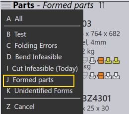
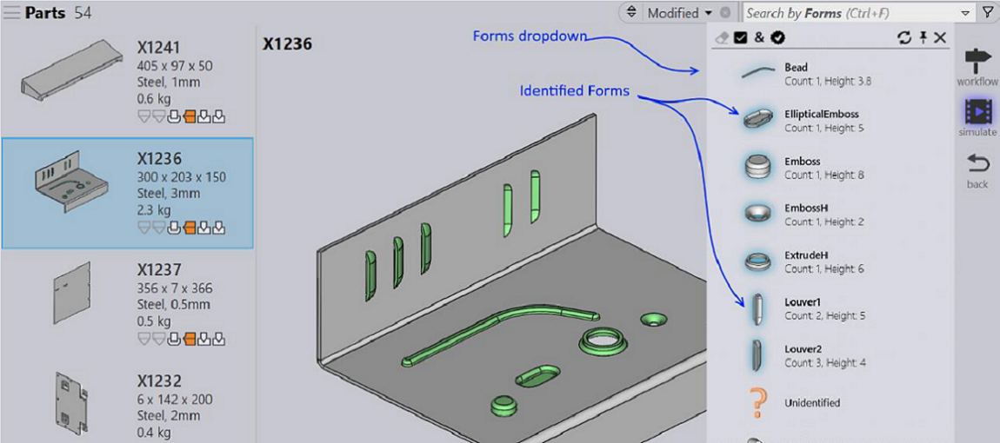

When parts with the forming is imported to the Part Library:
● Praxis recognizes these parts and tags them with the identified forms by adding the Part-Form pair to the index. These parts can be searched based on tagged forms using the search tool (Search behavior is similar to Bend mounts/used tools).
● To locate parts with any forms, change the search field to Form count and enter > 0 (greater than 0) in the search textbox. Alternatively, you can also recall Formed parts saved search for this.

● To locate parts with specific forms, change the search field to Forms and select any item from the dropdown list to list parts using the selected form.
● Opening the part details – shows all forms contained inside the part by highlighting them in the Forms dropdown. The instance count and height w.r.t the contained plane is displayed for these items to give a bit more context
● In part details, routing pane, Form count is displayed in total (unique) format for the part with forming.